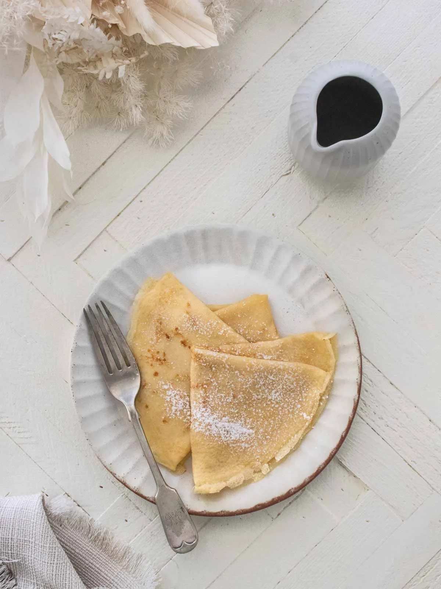

French Crepes

How to prepare delicious French Crepes
On this recipe, we are looking at how to prepare some delicious French Crepes to your SO.
Enjoy!
Ingredients
- 1 cup all-purpose flour
- 1 teaspoon white sugar
- 1/4 teaspoon salt
- 3 eggs
- 2 cups milk
- 2 tablespoons butter, melted
Steps
- Sift together flour, sugar, and salt; set aside. Beat eggs and milk together in a large bowl with an electric mixer. Beat in flour mixture until smooth; stir in melted butter.
- Heat a lightly oiled griddle or frying pan over medium-high heat.
- Pour or scoop the batter onto the griddle, using approximately 2 tablespoons for each crepe. Tip and rotate pan to spread batter as thinly as possible. Brown on both sides. Repeat with remaining batter. Serve hot.